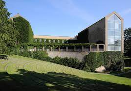

Kort over området
Åpark kollegiet ligger i hjertet af Aarhus.
På kortet kan du bla. finde nærmeste indkøbsmuligheder, uddannelsesmuligheder, cafeer og meget mere!
Åpark kollegiet

Åpark Kollegiet, Åparken 1, 3, 5 og 7, 8000 Aarhus C
Kollegiekontoret påbegyndte i efteråret 2010 byggeriet af et nyt stort kollegium med 251 lejligheder. Den første del af byggeriet blev klar til indflytning den 16/1-2012. Anden og sidste etape blev klar til indflyting i juli 2012.
Kollegiet rummer
201 stk. 1-værelses lejligheder
50 stk. 2-værelses lejligheder.
Indkøbsmuligheder:
Netto
Thorvaldsensgade 22, 24, 8000 Aarhus C
Spotvarer til spotpriser!
Netto var alt hvad man skal bruge og til gode priser.
Føtex

Ceres Allé 20, 8000 Aarhus C
I Føtex kan du både købe dagligvarer online eller alt til hjem og fritid. Du kan også bestille mad ud af huset til både hverdag og festlige begivenheder.
Altid gode tilbud.
Uddannelses muligheder:
Aarhus Universitet
Nordre Ringgade 1, 8000 Aarhus C
Aarhus Universitet er Danmarks næststørste universitet målt på studenterbestand og det næstældste. Universitetet blev etableret i 1928 i Aarhus og tæller i dag omkring 38.000 studerende.
Læs mere om Aarhus universitetVIA University College

Ceresbyen 24, 8000 Aarhus C
Campus Aarhus C ligger lige midt i Aarhus. Her bliver du en del af et moderne studiemiljø sammen med 16 forskellige danske og internationale uddannelser og mere end 7.000 studerende.
Læs mere om Aarhus universitetAarhus tech

Halmstadgade 6, 8200 Aarhus C
Gå på opdagelse i vores 28 erhvervsuddannelser – du finder med garanti en, der matcher dig og dine drømme.
God fornøjelse.
Erhvervsakademiet Aarhus
Ringvej Syd 104, 8260 Viby J
Vi tilbyder akademi- og diplomuddannelser samt kurser og skræddersyede forløb. Få efteruddannelsen som matcher dine karrieredrømme med en times gratis karrieresparring. Læs ved siden af dit job. Kompetencegivende udd. Styrk dine kompetencer.
Læs mere om erhvervsakademiet AarhusCafeer i nærheden:
Plantecafeen
Kjeld Tolstrups Gade 12, 8000 Aarhus C
Fantastisk omgivelser, der gøre dig godt når du besøger stedet.
Fra det øjeblik man træder ind af døren til plantecaféen, glemmer man alt om stress og jag, da de grønne plante over alt, får dig til at sænke parderne og bare slappe af nyde det gode bagværk.
Café FolkeVen
Thorvaldsensgade 17, 8000 Aarhus C
Cafe FolkeVen er en lille hyggelig lokal cafe, der tilbyder morgenmad, kaffe, kage, sandwich, salater og en gryderet to go eller to stay. Fint udvalg af glutenfri og laktosefri produkter. Alt er lavet af lækre, friske råvarer og til rimelige priser.
Læs mere om cafeenEn kold øl?
MALT fest og event
Thorvaldsensgade 33, 8000 Aarhus C
Kom og smag en skummende specialøl fra Kissmeyer, mens du nyder delikate a la carte-retter. Hos Malt sidder du i helt unikke rammer fra dengang da det historiske Ceres Bryggeri hørte til i det centrale Aarhus.
Det er råt - og elegant.
Serec

Ceresbyen 20, 8000 Aarhus C
Vi kan levere mad ud af huset, fra vores menukort eller kontakt os hvis du har specielle ønsker.
Du kan også låne vores lokaler til diverse arrangementer.
Væskebalancen

Vestergade 64, 8000 Aarhus C
Et par erfarne gutter har åbnet den nye bottle shop Væskebalancen.
Nick Theilgaard Olesen driver til dagligt ølbaren Mig og Ølsnedkeren i Mejlgade. Bag Væskebalancen står desuden Lars Nielsen, der har importeret øl til Danmark i 26 år.
Dette var blot et udpluk af Åpark kollegiets skønne omgivelser. I en by som Aarhus som er Danmarks næststørste og Jyllands største byområde, kommer du til at bo midt i det hele, og omgivet af unge mennekser.
Har dette fanget din interesse, så vil vi hellere end gerne høre fra dig, og besvare eventuelle spørgsmål!
Vi ser frem til at høre fra dig.